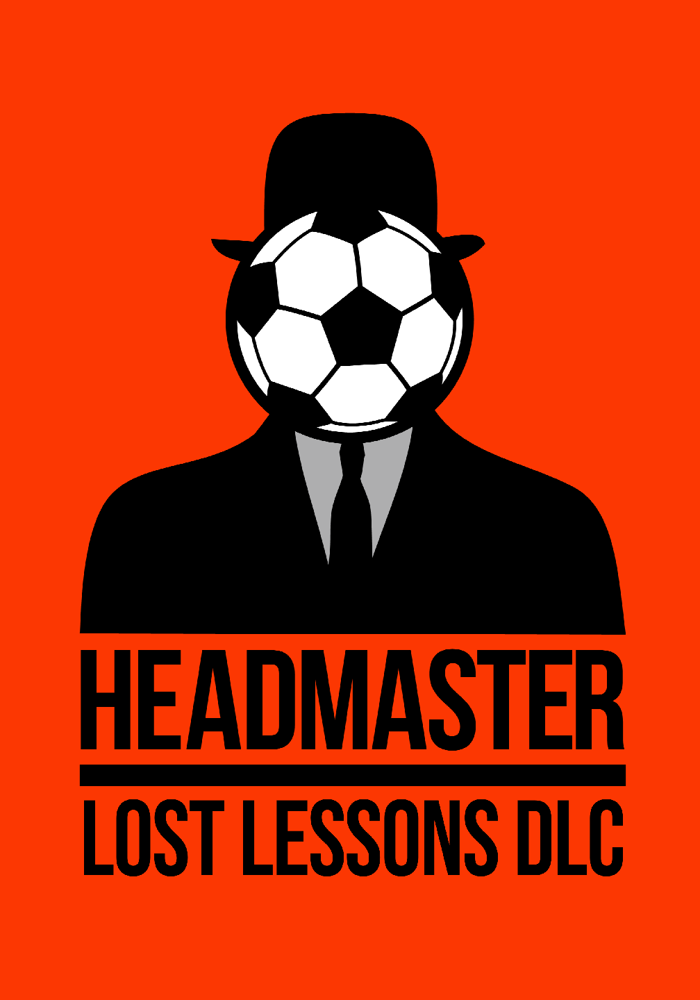
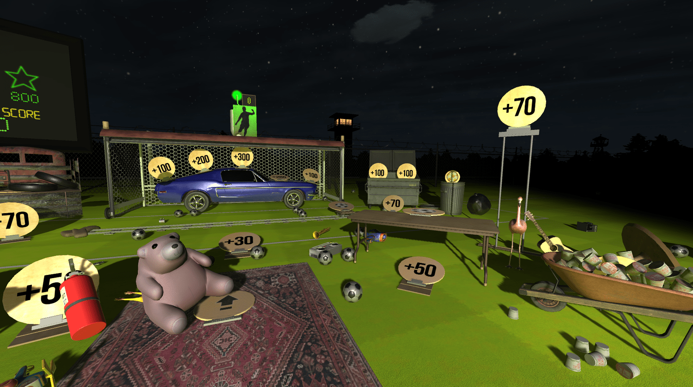
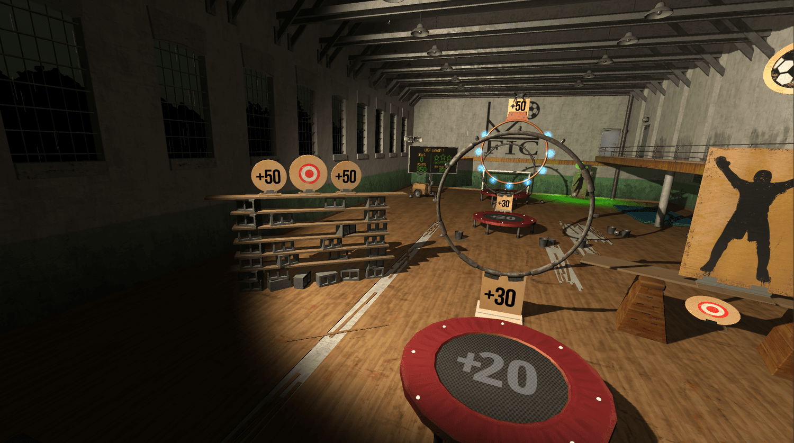
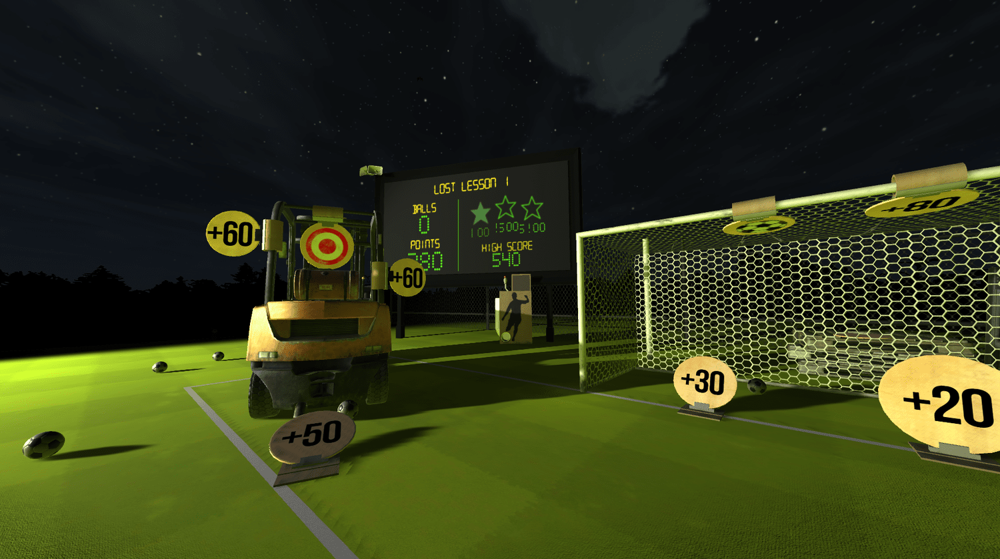
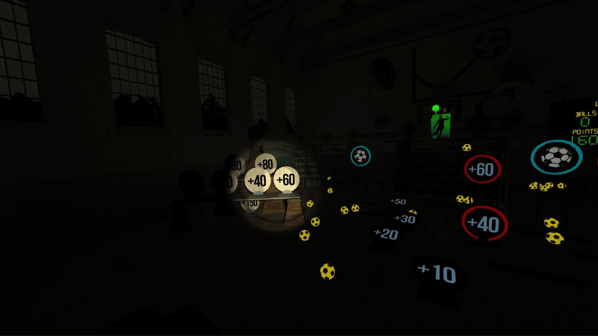
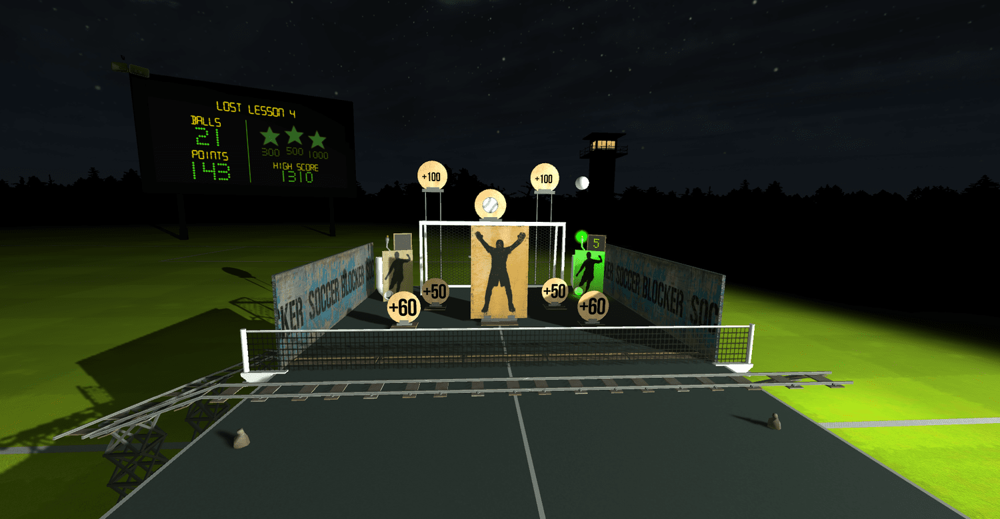
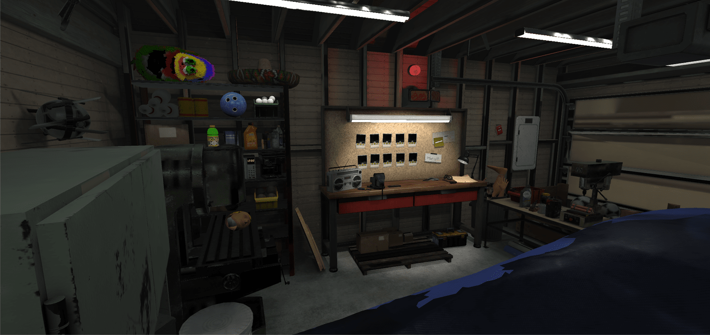
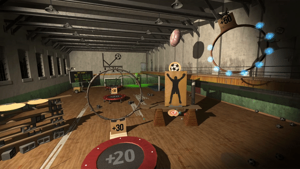
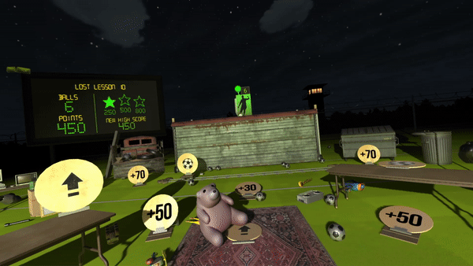
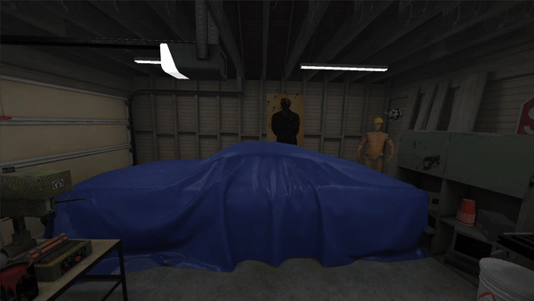

Headmaster: The lost lessons DLC
The first downloadable content pack for headmaster is here!
- Developer
- Frame Interactive
- Release Date
- April 3rd, 2020
- Platforms
- PSVR, SteamVR, and Oculus Rift
- Regular Price
- $7.99
- Website
- headmastergame.com/the-lost-lessons
- facebook.com/headmastergame
- reddit.com/r/HeadmasterGame
- Contact
- press@frameinteractive.com
Description
Headmaster: The Lost Lessons is the first ever downloadable content pack for the Headmaster. Devoted fans of the game have been asking for more Headmaster content for a long time, and finally, about 3 years after it’s initial release as a PSVR launch title, new levels for Headmaster are available for every platform that the game is on.
The Lost Lessons DLC started as an idea to give life back to old level concepts that never made it in the game the first time around. The final product is a combination of old and new ideas, all which give new and interesting takes on the original Headmaster mechanics that everyone loves.
With the addition of this The Lost Lessons DLC, players will be able to enter Carl’s Workshop for the first time. Carl is the lone employee of the Football Improvement Centre, and the mastermind behind all of the lessons in the game. For the first time, it is now possible to visit Carl’s secret lair, and try out 10 lessons from his backlog, all of which were deemed either too dangerous, too difficult, or too expensive to become part of the curriculum at the Football Improvement Centre.
Features
- 10 brand new Single Player levels featuring all new mechanics such as trampolines, miniature targets, and more!
- One new Party Mode level for local pass and play with up to 6 players
- New “Carl’s Workshop” Hub World
Logos: Download

Screenshots & GIFS: Download









About Headmaster: Headmaster Press Kit
About fRAME INTERACTIVE
Frame Interactive Studio LLC was formed in 2015 specializing in independent games and virtual reality. In 2020, Frame Interactive is based in Burlington, Vermont, and is made up of Ben Throop, Duncan Carroll, Sean Kennedy, and Daimen Paquin-Nault.